Credits
Photographs and map data
Map data © OpenStreetMap contributors (ODbL). Vector tiles by OpenFreeMap. Satellite imagery © Esri, Maxar, Earthstar Geographics and the GIS User Community. Routes by OSRM on routing.openstreetmap.de (FOSSGIS), computed once and stored with the page; they cross the Thames on its bridges only. Times are approximate and drives are without traffic.
The photographs of the places are from Wikimedia Commons, each under the licence named beside it.
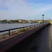
Thames Path
Photo by Bill Boaden, CC BY SA 2.0, via Wikimedia Commons, cropped and resized.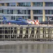
London Heliport
Photo by Lewis Clarke, CC BY SA 2.0, via Wikimedia Commons, cropped and resized.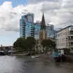
St Mary's Battersea
Photo by Laurie Nevay, CC BY SA 2.0, via Wikimedia Commons, cropped and resized.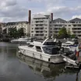
Chelsea Harbour
Photo by Lewis Clarke, CC BY SA 2.0, via Wikimedia Commons, cropped and resized.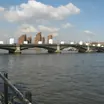
Battersea Bridge
Photo by Richard Rogerson, CC BY SA 2.0, via Wikimedia Commons, cropped and resized.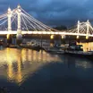
Albert Bridge
Photo by David Anstiss, CC BY SA 2.0, via Wikimedia Commons, cropped and resized.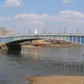
Wandsworth Bridge
Photo by Graeme Kerr, CC BY 2.5, via Wikimedia Commons, cropped and resized.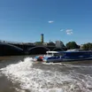
St Mary's Wandsworth Pier
Photo by Romainbehar, CC0, via Wikimedia Commons, cropped and resized.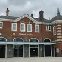
Clapham Junction
Photo by Curran2, CC0, via Wikimedia Commons, cropped and resized.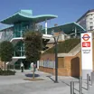
Imperial Wharf
Photo by Sunil060902, CC BY SA 3.0, via Wikimedia Commons, cropped and resized.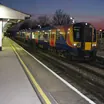
Wandsworth Town
Photo by Rudder57, CC BY SA 3.0, via Wikimedia Commons, cropped and resized.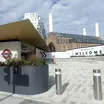
Battersea Power Station station
Photo by Marathon, CC BY SA 2.0, via Wikimedia Commons, cropped and resized.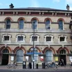
Battersea Park station
Photo by Geof Sheppard, CC BY SA 4.0, via Wikimedia Commons, cropped and resized.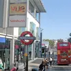
Fulham Broadway
Photo by Ben Brooksbank, CC BY SA 2.0, via Wikimedia Commons, cropped and resized.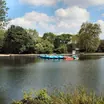
Battersea Park
Photo by Paul Gillett, CC BY SA 2.0, via Wikimedia Commons, cropped and resized.- Peace Pagoda
Photo by Paul Gillett, CC BY SA 2.0, via Wikimedia Commons, cropped and resized. - Children's Zoo
Photo by Maggie Jones, Public domain, via Wikimedia Commons, cropped and resized. 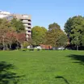
York Gardens
Photo by Stephen McKay, CC BY SA 2.0, via Wikimedia Commons, cropped and resized.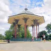
Clapham Common
Photo by Paul Gillett, CC BY SA 2.0, via Wikimedia Commons, cropped and resized.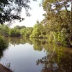
Wandsworth Common
Photo by Dr Neil Clifton, CC BY SA 2.0, via Wikimedia Commons, cropped and resized.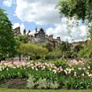
Chelsea Physic Garden
Photo by Elisa.rolle, CC BY SA 4.0, via Wikimedia Commons, cropped and resized.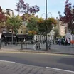
Battersea Square
Photo by Bill Boaden, CC BY SA 2.0, via Wikimedia Commons, cropped and resized.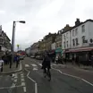
Northcote Road
Photo by Stacey Harris, CC BY SA 2.0, via Wikimedia Commons, cropped and resized.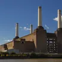
Battersea Power Station
Photo by Alberto Pascual, CC BY SA 3.0, via Wikimedia Commons, cropped and resized.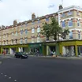
King's Road
Photo by PAUL FARMER, CC BY SA 2.0, via Wikimedia Commons, cropped and resized.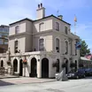
The Ship
Photo by canalandriversidepubs co uk, CC BY SA 2.0, via Wikimedia Commons, cropped and resized.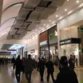
Southside Wandsworth
Photo by Curran2, CC0, via Wikimedia Commons, cropped and resized.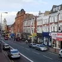
St John's Hill
Photo by Stefan Czapski, CC BY SA 2.0, via Wikimedia Commons, cropped and resized.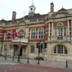
Battersea Arts Centre
Photo by Dr Neil Clifton, CC BY SA 2.0, via Wikimedia Commons, cropped and resized.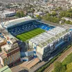
Stamford Bridge
Photo by Arne Müseler, CC BY SA 3.0 de, via Wikimedia Commons, cropped and resized.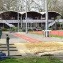
Millennium Arena
Photo by Colin Smith, CC BY SA 2.0, via Wikimedia Commons, cropped and resized.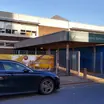
Harris Academy Battersea
Photo by Mx. Granger, CC0, via Wikimedia Commons, cropped and resized.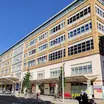
Chelsea and Westminster
Photo by Shadowssettle, CC BY SA 4.0, via Wikimedia Commons, cropped and resized.


.jpg){kind=link}


.jpg){kind=link}